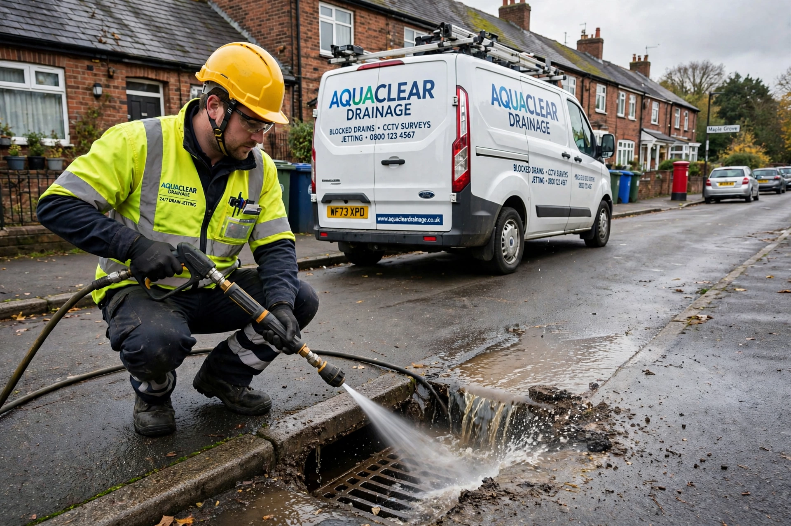

🤝 Partnered with SB Drainage
🕒 Mon–Sun: 24/7 Call-Outs
Blocked Drain Rescue NW clears blocked drains, toilets, sinks and outside drains for homes and businesses. We find the cause, clear it properly, and test it before we leave — with a clear quote before any work starts.

Our business started when we saw a real gap — Preston needed drainage help that was reliable, insured, and straightforward for both homes and businesses. Not a quick poke and a vague price, but a proper job done right.
Over the last ten years we have built that expertise job by job — from everyday unblocks, to detailed system inspections, to planned preventative maintenance that stops problems before they start.
Today, that same approach runs through everything we do: a careful check to find the true cause, methodical clearing with high-pressure cleaning and in-depth CCTV inspection where needed, clear pricing up front, and work backed by a 14-day workmanship guarantee.
🤝 Partnered with SB Drainage
Blocked Drain Rescue NW works in partnership with SB Drainage — extra capacity, shared know-how, and the same straightforward standard on every job.
Blocked Drain Rescue NW resolves drainage in Preston for homes and businesses. Drawing on our experience, we diagnose quickly and deliver a wide range of expert solutions — from blockage removal to system inspections — with precision and care.
Blocked drains bring smells, slow draining and backups into your home or business. We clear the debris quickly using high-pressure jetting and hands-on methods, keeping disruption to a minimum.
Once it’s clear, we check the flow and explain what caused it — so you’re less likely to get the same blockage again.
Our CCTV surveys let us look inside your pipes without digging. A small camera travels down the drain and shows us exactly where the fault or blockage is.
Using locators we pinpoint the problem accurately and advise on the right repair. Because it’s non-invasive, it avoids unnecessary excavation and saves you time and money.
We shift stubborn build-up with powerful water jetting. Our engineers set the pressure to suit your pipe material, clearing roots, scale and grease safely.
Regular cleaning keeps pipes flowing, helps them last longer, and stops the same blockage coming back again and again.
Our team holds certifications from recognised industry bodies and carries public liability insurance — so you know you’re dealing with professionals who take safety and standards seriously for drainage in Preston.
Every job starts with a proper check to find the root cause. Then we use high-pressure jetting and camera inspections to deliver a lasting fix and consistent quality.
We also clear stubborn blockages, root ingress and foul odours, and offer proactive maintenance plans that help prevent them coming back and help your system last longer.
Because we focus on clear communication and reliability at every stage, you get minimal disruption and a team you can trust.
Areas we cover:
✔ Certified engineers ✔ Public liability insurance ✔ 14-day workmanship guarantee ✔ Partnered with SB Drainage
We know some drainage problems can’t wait — a flooded toilet, a burst pipe soaking your hallway, or heavy rain making garden drains overflow.
Our 24/7 emergency team responds quickly to protect your property and get your drainage flowing again.
🚨 Emergency? Call UsCall 01772 439368 — emergencies are prioritised today.
We aim to attend within 24 hours, and much faster for flooding — usually within a few hours depending on location.
It depends on the blockage and access. We give a fixed quote before work starts.
Yes — Mon–Sun, 24/7 call-outs for emergencies.